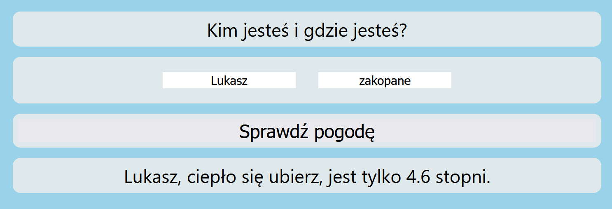
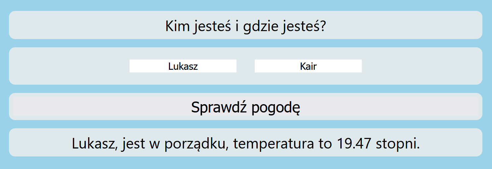
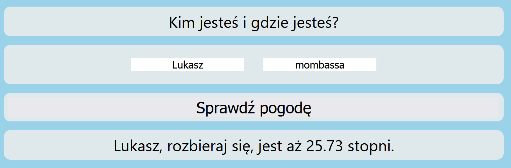
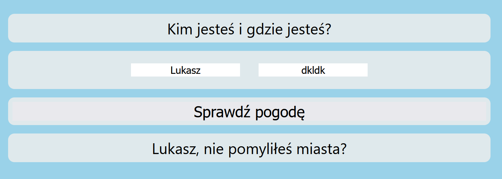

Instrukcja
Celem ćwiczenia jest poznanie jednego ze sposobów pozyskiwania danych z zasobów internetu (zewnętrznych bądź wewnętrznych).
Zaproponowany sposób wykorzystuje fetch api. Jest to proste narzędzie, które posłuży do pobrania zasobu z zewnętrznego api.
Za owe zewnętrzne api posłuży nam:
https://openweathermap.org
udostepniające dane pogodowe dla zadanej lokalizacji. W dalszym kroku będziemy poznawać sposoby użycia ciasteczek, które służa zapamiętywaniu danych o użytkowniku odwiedzającym stronę internetową w pamięci przeglądarki.
- Zapoznaj się ze sposobem użycia fetch api oraz dokumentacją api openweathermap (metoda Current Weather Data)
- Zaimplementuj wywołanie funkcji fetch, w celu pozyskania danych z api pogodowego. Jako klucz api możesz użyć: 14a24dee3920387f8b0cfd6295374d0c
Jako parametr "q" podaj wpisany przez użytkownika tekst w pole "Miejsce". Wynik obejrzyj na konsoli.
- Wyłuskaj z odpowiedzi pozyskanej z api dane np. o temperaturze i na ich podstawie przygotuj i wyświetl informacje o pogodzie dla użytkownika prezentując
np. dla różnych przedziałów temperatury różne sposoby ubioru.
Zauważ, że domyślnie po wejściu na stronę panel z tą informację (id=resp) jest ukryty. Możesz go wyświetlić w js, ustawiając styl display z powrotem na "block":
getDocumentById('resp').style.display ='block';



- Obsłuż sytuacje, w których użytkownik nie poda imienia, nazwy miejsca, bądź nazwa miejsca będzie błędna

- Zapisz dane użytkownika (imię) w ciasteczku, tak by przy kolejnym wejściu na stronę pole to zostało automatycznie uzupełnione. Mozesz skorzystać z gotowych funkcji wymienionych tutaj
Na pracy własnej
- Zamieść na stronie mapę google, która po wpisaniu miejscowości i zaczytaniu danych z api pogodowego, wycentruje się i wskaże znacznikiem owe miejsce.
Jest to bardzo proste, skorzystaj z gotowego kodu stąd
podmieniając interesujące nas elementy. (Zwróć uwagę, że nalezy dodać po małym fragmencie do pliku js, html i css!)
- Rozbuduj stronę wykorzystując kolejne api. Proponuję api quizowe: https://opentdb.com/. Przy każdym wejściu na stronę, prezentuj użytkownikowi nowe pytanie wraz z odpowiedziami.
- Przy pomocy ciasteczek zliczaj jego poprawne i błędne odpowiedzi, wyświetlając te statystyki. Zachowaj przy tym dotychczasowe funkcjonalności strony.